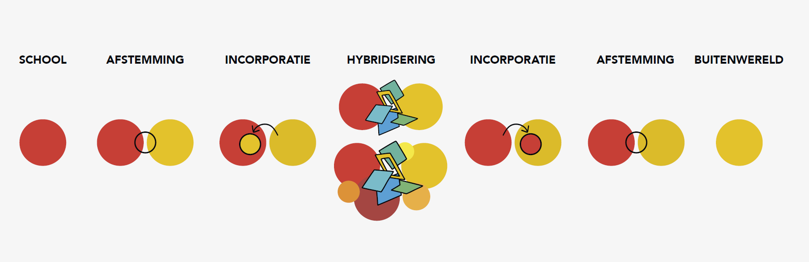

An important consideration is the location of the transdisciplinary learning environment. Various options exist, including organizing it on the school campus, at an external venue, online, or adopting a hybrid approach that combines both on- and offline elements. Conducting the program on campus has the advantage of well-equipped rooms with materials for work, learning, and collaboration, including projectors, screens, tables, chairs, and Wi-Fi. Additionally, the on-campus setting is accessible and familiar to students, potentially reducing barriers to participation. However, for societal partners, campuses are outside their comfort zone.
Choosing an external location can be inspiring, offering existing wicked problems for participants to tackle. This setting becomes a space for experimentation, research, and collaboration, often involving societal partners already engaged in the location where the learning environment occurs. Moreover, it breaks the routine of a familiar environment, creating a neutral space where each participant can engage on an equal footing.
Considering the context is crucial. What kind of environment do you want to create with the participants? Is it meant to be informal, practical, or social? The choice depends on the wicked problem being addressed. For instance, at Avans Hogeschool, Helios (Hybrid External Learning and Innovation environments) extend beyond the classroom. De Kleine Aarde, a food garden, focuses on issues related to food transition, biodiversity, and soil. Meanwhile, WijWest, a neighbor center, addresses social issues like neighborhood loneliness or youth criminality.
Therefore, selecting the environment and context should align with the wicked problem being addressed, the involved parties, and the program format.
